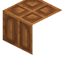
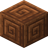
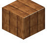
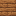
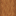
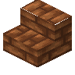
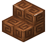
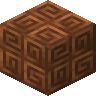

黄金之秋 12 Autumnity
共 113 个条目 · autumnity
版本: 6.0.1 · 来源: autumnity-1.21.1-6.0.1.jar
An autumn-themed mod with new biomes and friendly snails.
MC百科中文名: 黄金之秋 12
MC百科页面: https://www.mcmod.cn/class/7480.html（黄金之秋 12 (The Golden Autumn 12)）
MC百科检索: site:mcmod.cn Autumnity
官方介绍 （Modrinth · 中文版由 GLM AI 翻译，仅供参考）
查看英文原文（Modrinth）
资料来源：Autumnity
物品与方块
 秋番红花
秋番红花autumnity:autumn_crocus · 方块
 雕刻过的大型南瓜块
雕刻过的大型南瓜块autumnity:carved_large_pumpkin_slice · 方块

Chiseled Maple Bookshelfautumnity:chiseled_maple_bookshelf · 方块

錾制蜗牛壳砖autumnity:chiseled_snail_shell_bricks · 方块
 熟火鸡肉
熟火鸡肉autumnity:cooked_turkey · 方块
 熟火鸡肉块
熟火鸡肉块autumnity:cooked_turkey_piece · 物品
 诅咒南瓜灯
诅咒南瓜灯autumnity:cupric_jack_o_lantern · 方块
末影南瓜灯autumnity:ender_jack_o_lantern · 方块
 污秽浆果
污秽浆果autumnity:foul_berries · 物品
 Basket of Foul Berries
Basket of Foul Berriesautumnity:foul_berry_basket · 方块污秽浆果丛
autumnity:foul_berry_bush · 方块?污秽浆果种子
autumnity:foul_berry_bush_pips · 方块
 污秽浆果种子
污秽浆果种子autumnity:foul_berry_pips · 物品?袋装污秽浆果
autumnity:foul_berry_sack · 方块
 秽莓汤
秽莓汤autumnity:foul_soup · 物品
 大型诅咒南瓜灯块
大型诅咒南瓜灯块autumnity:large_cupric_jack_o_lantern_slice · 方块
 大型末影南瓜灯块
大型末影南瓜灯块autumnity:large_ender_jack_o_lantern_slice · 方块
 大型南瓜灯块
大型南瓜灯块autumnity:large_jack_o_lantern_slice · 方块
 Large Maple Boat
Large Maple Boatautumnity:large_maple_boat · 物品
 大型南瓜块
大型南瓜块autumnity:large_pumpkin_slice · 方块
 大型红石南瓜灯块
大型红石南瓜灯块autumnity:large_redstone_jack_o_lantern_slice · 方块
 大型灵魂南瓜灯块
大型灵魂南瓜灯块autumnity:large_soul_jack_o_lantern_slice · 方块?长枫树树枝
autumnity:long_maple_branch · 方块
 枫木蜂巢
枫木蜂巢autumnity:maple_beehive · 方块

Maple Boardsautumnity:maple_boards · 方块
 枫木船
枫木船autumnity:maple_boat · 物品
 枫木书架
枫木书架autumnity:maple_bookshelf · 方块?枫树树枝
autumnity:maple_branch · 方块
 枫木按钮
枫木按钮autumnity:maple_button · 方块

枫木箱子autumnity:maple_chest · 方块
 Maple Boat with Chest
Maple Boat with Chestautumnity:maple_chest_boat · 物品
 枫木门
枫木门autumnity:maple_door · 方块
 枫木栅栏
枫木栅栏autumnity:maple_fence · 方块
 枫木栅栏门
枫木栅栏门autumnity:maple_fence_gate · 方块
 Maple Boat with Furnace
Maple Boat with Furnaceautumnity:maple_furnace_boat · 物品
 Maple Hanging Sign
Maple Hanging Signautumnity:maple_hanging_sign · 方块?枫树树篱
autumnity:maple_hedge · 方块
 枫木楼梯
枫木楼梯autumnity:maple_ladder · 方块旗帜图案
autumnity:maple_leaf_banner_pattern · 物品?枫叶地毯
autumnity:maple_leaf_carpet · 方块
 Pile of Maple Leaves
Pile of Maple Leavesautumnity:maple_leaf_pile · 方块
 枫叶
枫叶autumnity:maple_leaves · 方块
 枫木原木
枫木原木autumnity:maple_log · 方块
 枫木木板
枫木木板autumnity:maple_planks · 方块?枫木柱
autumnity:maple_post · 方块
 枫木压力板
枫木压力板autumnity:maple_pressure_plate · 方块
 枫树树苗
枫树树苗autumnity:maple_sapling · 方块
 枫木告示牌
枫木告示牌autumnity:maple_sign · 方块
 枫木台阶
枫木台阶autumnity:maple_slab · 方块
 枫木楼梯
枫木楼梯autumnity:maple_stairs · 方块
 枫木活板门
枫木活板门autumnity:maple_trapdoor · 方块?枫木竖直台阶
autumnity:maple_vertical_slab · 方块

Maple Wall Hanging Signautumnity:maple_wall_hanging_sign · 方块墙上的枫木告示牌
autumnity:maple_wall_sign · 方块
枫木autumnity:maple_wood · 方块?橙枫树篱
autumnity:orange_maple_hedge · 方块?橙色枫叶地毯
autumnity:orange_maple_leaf_carpet · 方块
 Pile of Orange Maple Leaves
Pile of Orange Maple Leavesautumnity:orange_maple_leaf_pile · 方块
 橙色枫叶
橙色枫叶autumnity:orange_maple_leaves · 方块
 橙枫树苗
橙枫树苗autumnity:orange_maple_sapling · 方块
 枫糖煎饼
枫糖煎饼autumnity:pancake · 方块
 盆栽秋番红花
盆栽秋番红花autumnity:potted_autumn_crocus · 方块
污秽浆果盆栽autumnity:potted_foul_berries · 方块
盆栽枫树树苗autumnity:potted_maple_sapling · 方块
盆栽橙枫树苗autumnity:potted_orange_maple_sapling · 方块
盆栽红枫树苗autumnity:potted_red_maple_sapling · 方块
盆栽黄枫树苗autumnity:potted_yellow_maple_sapling · 方块
 南瓜面包
南瓜面包autumnity:pumpkin_bread · 物品?红枫树篱
autumnity:red_maple_hedge · 方块?红色枫叶地毯
autumnity:red_maple_leaf_carpet · 方块
 Pile of Red Maple Leaves
Pile of Red Maple Leavesautumnity:red_maple_leaf_pile · 方块
 红色枫叶
红色枫叶autumnity:red_maple_leaves · 方块
 红枫树苗
红枫树苗autumnity:red_maple_sapling · 方块
红石南瓜灯autumnity:redstone_jack_o_lantern · 方块
 枫树树液瓶
枫树树液瓶autumnity:sap_bottle · 物品
 满溢树液的枫木原木
满溢树液的枫木原木autumnity:sappy_maple_log · 方块
满溢树液的枫木autumnity:sappy_maple_wood · 方块?史莱姆
autumnity:slime · 方块
 蜗牛粘液球
蜗牛粘液球autumnity:snail_goo · 方块
 蜗牛粘液块
蜗牛粘液块autumnity:snail_goo_block · 方块
 蜗牛壳方块
蜗牛壳方块autumnity:snail_shell_block · 方块
 蜗牛壳砖台阶
蜗牛壳砖台阶autumnity:snail_shell_brick_slab · 方块

蜗牛壳砖楼梯autumnity:snail_shell_brick_stairs · 方块?蜗牛壳砖竖直台阶
autumnity:snail_shell_brick_vertical_slab · 方块
 蜗牛壳砖墙
蜗牛壳砖墙autumnity:snail_shell_brick_wall · 方块
 蜗牛壳砖块
蜗牛壳砖块autumnity:snail_shell_bricks · 方块
 蜗牛壳胸甲
蜗牛壳胸甲autumnity:snail_shell_chestplate · 物品
 蜗牛壳碎片
蜗牛壳碎片autumnity:snail_shell_piece · 物品
 蜗牛壳瓦台阶
蜗牛壳瓦台阶autumnity:snail_shell_tile_slab · 方块

蜗牛壳瓦楼梯autumnity:snail_shell_tile_stairs · 方块?蜗牛壳瓦竖直台阶
autumnity:snail_shell_tile_vertical_slab · 方块
 蜗牛壳瓦墙
蜗牛壳瓦墙autumnity:snail_shell_tile_wall · 方块

蜗牛壳瓦块autumnity:snail_shell_tiles · 方块
 蜗牛刷怪蛋
蜗牛刷怪蛋autumnity:snail_spawn_egg · 物品
灵魂南瓜灯autumnity:soul_jack_o_lantern · 方块
 去皮枫木原木
去皮枫木原木autumnity:stripped_maple_log · 方块?去皮枫木柱
autumnity:stripped_maple_post · 方块
去皮枫木autumnity:stripped_maple_wood · 方块
 旗帜图案
旗帜图案autumnity:swirl_banner_pattern · 物品
 枫糖瓶
枫糖瓶autumnity:syrup_bottle · 物品高大污秽浆果灌木
autumnity:tall_foul_berry_bush · 方块枫木陷阱箱
autumnity:trapped_maple_chest · 方块
 生火鸡肉
生火鸡肉autumnity:turkey · 方块
 火鸡蛋
火鸡蛋autumnity:turkey_egg · 物品
 箱装火鸡蛋
箱装火鸡蛋autumnity:turkey_egg_crate · 方块
 生火鸡肉块
生火鸡肉块autumnity:turkey_piece · 物品
火鸡刷怪蛋autumnity:turkey_spawn_egg · 物品?竖直枫木木板
autumnity:vertical_maple_planks · 方块?黄枫树篱
autumnity:yellow_maple_hedge · 方块?黄色枫叶地毯
autumnity:yellow_maple_leaf_carpet · 方块
 Pile of Yellow Maple Leaves
Pile of Yellow Maple Leavesautumnity:yellow_maple_leaf_pile · 方块
 黄色枫叶
黄色枫叶autumnity:yellow_maple_leaves · 方块
 黄枫树苗
黄枫树苗autumnity:yellow_maple_sapling · 方块